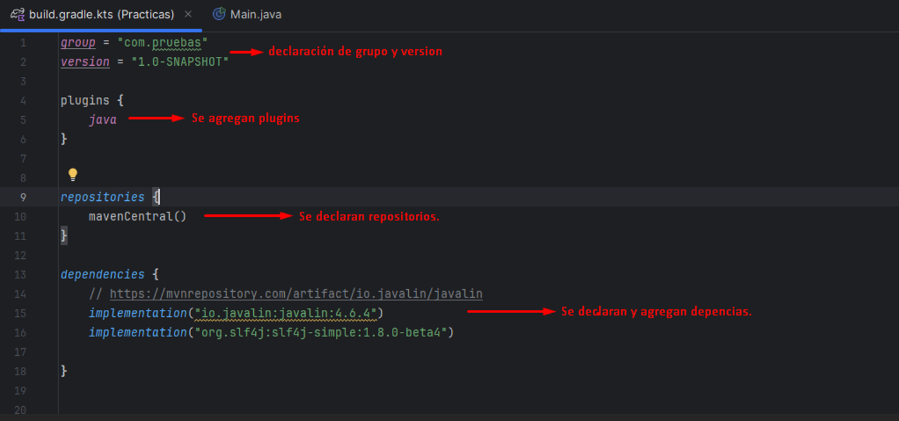
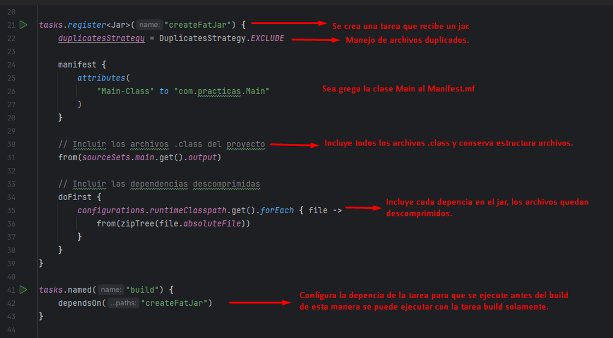
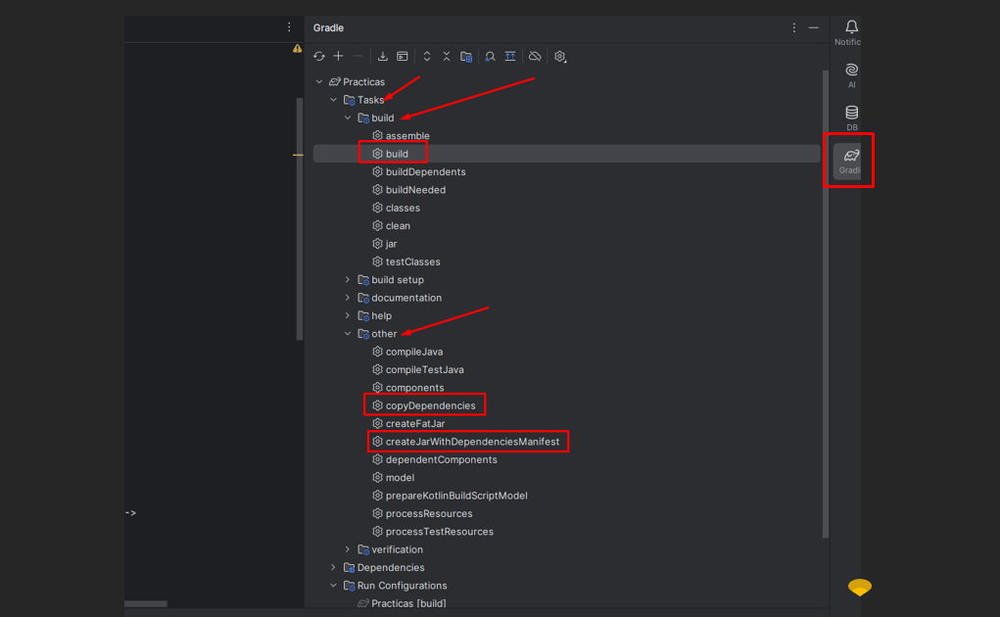

Archivo Build kotlin.
Gradle requiere algunos archivos para su configuración, el archivo en el archivo gradle.properties se agregar propiedades que pueden ser leídas por las tareas registradas. El archivo setting.gradle.kts se configura el nombre del proyecto [rootProject.name = "Practicas"] y en el archivo build.gradle.kts se crean o registran todas las tareas que se usaran posteriormente.
Crear fat jar con las depencias.
Crea una tarea para generar un archivo jar con todos los bitcode y las depencias necesarias no empaquetas.
Crear jar con depencias al mismo nivel en carpeta lib.
Se registra una tarea para crear un archivo jar con los binarios y al mismo nivel agregar una carpeta lib con todas las dependencias en formato jar. Se agrega la clase principal al manifest del jar principal y el classpath con cada una de las dependencias.

Arbol proyecto Gradle 'Tareas'.
Las tareas registradas quedan almacenas en el directorio other, para el caso anterior se puede ejecutar desde el build ya que se agregó la dependencia de ejecución a la tarea build en cada una.
